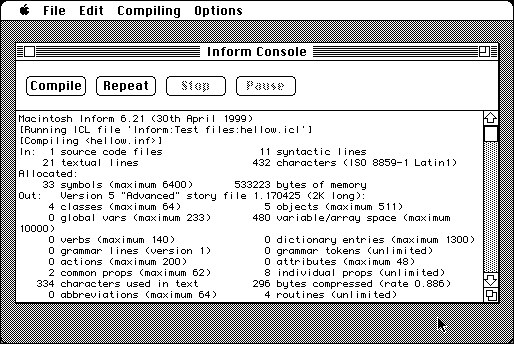

Download
inform621_mac325.zip (315K) Inform 68K 6.21/3.25 and Library 6/10 repackaged into a zipped hfs disk image and checksum file. The disk image can be mounted with Mini vMac.
inform621_mac325.cpt.hqx (254K) Inform 68K 6.21/3.25 in the original format.
inform_library610.zip (86K) Inform Library 6/10 in the original format.
copyright: Graham Nelson & Robert A. Pelak
mod date: May 24, 1999
license: free for non-commercial use
official url :
Inform
Compiles “Inform language into Infocom format story files” (Z-code). “Inform is a programming language and design system for interactive fiction originally created in 1993 by Graham Nelson.” The resulting Z-Code can be played with MaxZip.

More Downloads
DM4html.tar.gz (971K) The Inform Designer's Manual, Fourth Edition: July 2001, in HTML format
ZSpec10.zip (156K) The Z-Machine Standards Document, Version 1.0, 22nd June 1997, in HTML format
inform621_source.zip (205K) Inform 6.21 source code, the platform independent part.
If you find these downloads useful, please consider helping the Gryphel Project, which hosts them.
Here are the md5 checksums for the downloads, signed with Gryphel Key 5:
--------- GRY SIGNED TEXT --------- 71bcf48dd10a91327f1fbb571110a7f6 inform621_mac325.zip 46cfafb518acf1f9c35d5287b31a68d7 inform621_mac325.cpt.hqx e8fbb2cb74d3d5893b7f3602877575fd inform_library610.zip 305f78ae16720a83d00497ffdfcf0fd8 DM4html.tar.gz 78e9b5544d500eaf24beeeb2ba7ca9c5 ZSpec10.zip b78667f69bf6b73c8065998d2ef74147 inform621_source.zip ------- BEGIN GRY SIGNATURE ------- Gry/4Xa8CFcUzxdN/APmi32kXh7C+Z0zUOwbBOFsnqZs50q3aJYuohLOB9NvM/eq C6kEG7Q+ES1ZsLr9eR8Zo2KN9cLk6GIu9qWqHi8clz59NEtG3LjZkHptXB2Fqzfz mUR3z4BCYdFbLNhCCkPK13eppz+jldTsq5LnRwwWwYFLvSxagXJyqvvm9VpZgPtA -------- END GRY SIGNATURE --------